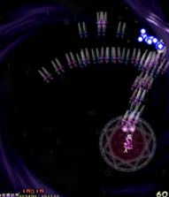

この面はボスよりも雑魚がやっかいなので、雑魚の出現位置を覚えて雑魚が弾を撃つ前に倒してしまおう。

自機狙い弾を発射する雑魚部隊が左、右、左、右、左右、左右、左右、左右と出てくる。
最初の4回は、敵の出現位置で低速ショット撃ちながらじっとしていて敵が弾を撃ったら敵の出てきた方向に避けよう。

“雲の上の桜花結界”
の文字が消えると自機狙いの弾を撃つ妖精と回転する雑魚部隊が出てくる。
回転する雑魚は弾を撃たないので、青い自機狙い弾が厄介な妖精を低速ショットで速攻撃破しよう。
自機狙いの3way弾を撃つ雑魚が左右に出てくる。
弾と弾の隙間で上手く避けつづけよう。
こちらも厄介なので出現したら速攻撃破をしたいところ。
両方破壊するのが難しかったら片方だけ撃破するのでも良い。（右より左の方が簡単かも？）
回転する雑魚部隊が出てきて、そいつを撃破すると自機狙いの弾を撃ってくる（打ち返し弾）。
この場面になったら画面下端（テンキーの1か3あたり）に行き、弾をチョン避けしながら逆方向にちょっとずつ移動しよう。
敵弾に追い詰められないように方向を切りかえすのも忘れずに。
すごくヤバくなったら被弾する前にボムを使うべき。